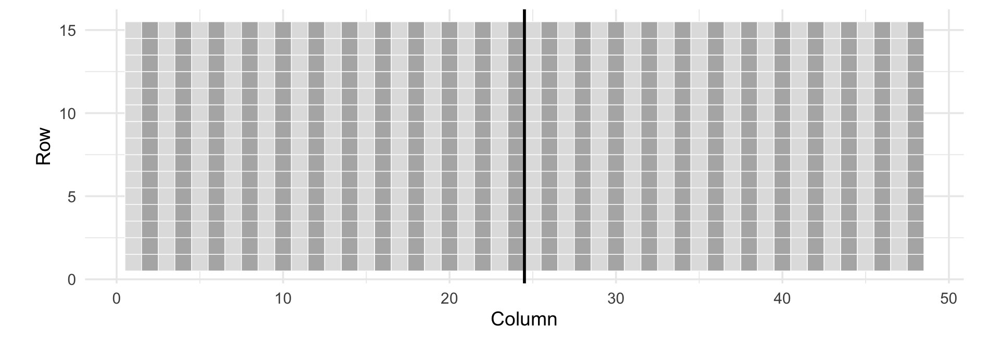
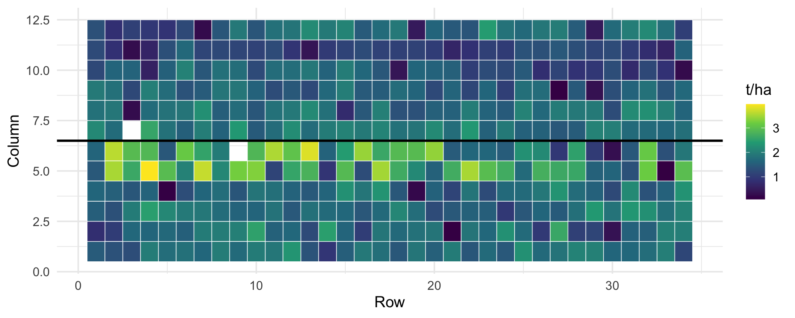

Day 2: Experimental Designs for Plant Breeding Trials
Regional Training Course on Experimental Design and Data Analysis for the Advancement of Mutant Populations (RER5030)
10 November 2026
Plan for the morning
| Block | Topic |
|---|---|
| 1 | Why design matters: replication, randomization, local control |
| 2 | The main designs: CRD, RCBD, augmented, alpha-lattice, row-column, p-rep |
| 3 | Comparing designs on a real field (uniformity trial) |
| 4 | Real trials: beans (alpha-lattice) and wheat (row-column) |
| 5 | Early generations: augmented vs p-rep |
| 6 | Choosing a design and FielDHub practical |
| 7 | From layout to statistical model, exercise |
Goal: leave able to choose a design for your own trial, generate the layout in FielDHub, and write the model that goes with it.
Block 1
Why design matters
Three principles (Fisher, 1920s)
| Principle | What it means | Why |
|---|---|---|
| Replication | Each genotype in more than one plot | Estimates the error; more plots, more precise means |
| Randomization | Genotypes allocated to plots at random | No systematic advantage; the error estimate is valid |
| Local control | Similar plots grouped in blocks | Removes field variation from the comparison |
A good design does not make the field uniform. It arranges the plots so that field effects can be separated from genotype effects in the analysis.
A field without genotypes
A uniformity trial: one variety sown everywhere. Every difference is field, not genotype.

Williams and Luckett (1988), barley, 720 plots, agridat::williams.barley.uniformity
How big is the field variation?
min max sd
1 1.45 3.29 0.2891378- One variety: 1.45 to 3.29 t/ha, SD 0.29 t/ha
- Two genotypes that differ by 0.3 t/ha could swap places just by the plots they fall on
- Neighbouring plots are more similar than distant ones
- Variation is not the same in rows and in columns
Field variation is the noise in which we look for genetic differences.
Variation caused by management

Sown with a three-plot seeder: first-position columns yield about 0.1 to 0.2 t/ha less. Small blocks can capture this; large blocks cannot.
Breeding trials are special
- Many entries: 100 to thousands of lines, not 4 treatments
- Costly replication: in early generations, seed for one plot only
- Heterogeneous field in more than one direction
300 genotypes in a complete block = a block too large to be uniform.
Solution: incomplete blocks, smaller than the number of genotypes.
Block 2
The main designs
Classical designs
| Design | Structure | Use in breeding |
|---|---|---|
| CRD | Random allocation, no blocks | Uniform conditions only: growth chamber, some greenhouse trials |
| RCBD | Every block has every genotype once | Few genotypes (up to about 20 to 30), advanced trials |
| Augmented | New lines in 1 plot, checks in every block | Early generations, many lines |
- Nebraska wheat (
stroup.nin, Day 1): RCBD with 56 genotypes. The low-yield corner was smaller than a block, so blocks could not remove it. - Augmented design:
kling.augmented, Day 1.
Designs with incomplete blocks
| Design | Blocks in | Complete replicates (resolvable) |
|---|---|---|
| Alpha-lattice | One direction | Yes |
| Row-column | Rows and columns | No |
| Resolvable row-column | Rows and columns | Yes |
| p-rep | Rows, columns, spatial terms | No |
- Alpha-lattice: t = s x k entries, s blocks of k plots per replicate (Patterson and Williams, 1976)
- Row-column: every row and every column is an incomplete block
- p-rep: only a fraction of the lines replicated (Cullis et al., 2006)
Block 3
Comparing designs on a real field
The idea
Lay each design over the uniformity trial as if 360 genotypes had been sown in 2 replicates (720 plots).
- One variety only: the true genotype differences are zero
- Everything the model calls error is real field variation the design did not remove
- Nothing is simulated
We measure each design by the average SED: the standard error of the difference between two genotype means. Smaller is better.
Generate the layouts with FielDHub
ID LOCATION PLOT REP IBLOCK UNIT ENTRY TREATMENT
1 1 1 101 1 1 1 344 G-344
2 2 1 102 1 1 2 162 G-162
3 3 1 103 1 1 3 133 G-133
4 4 1 104 1 1 4 131 G-131Each design returns a field book: replicate, block, entry, plot.
Put the layouts on the field
fill_columns <- function(fb) {
fb |> group_by(REP) |> mutate(i = row_number(),
col = (REP - 1) * 24 + ceiling(i / 15), row = (i - 1) %% 15 + 1) |> ungroup()
}
on_field <- function(fb) {
fb |> inner_join(williams, by = c("row", "col")) |>
mutate(across(c(REP, TREATMENT), factor), rowf = factor(row), colf = factor(col))
}
d_crd <- crd$fieldBook |> mutate(REP = 1) |> fill_columns() |> on_field()
d_rcbd <- rcbd$fieldBook |> fill_columns() |> on_field()
d_alpha <- alpha$fieldBook |> mutate(col = (REP - 1) * 24 + IBLOCK, row = UNIT) |>
on_field() |> mutate(IBLOCK = factor(IBLOCK))
d_rowcol <- rowcol$fieldBook |> mutate(col = (REP - 1) * 24 + COLUMN, row = ROW) |> on_field()The alpha-lattice on the field

2 replicates, 24 incomplete blocks of 15 plots each (one block per column).
One model per design
- Genotypes fixed (we compare means)
- Incomplete blocks, rows and columns random
- Rows and columns nested in replicate:
REP:rowf
Result: precision of each design
average_sed <- function(fit) {
V <- vcov(emmeans(fit, "TREATMENT", lmer.df = "asymptotic"))
n <- nrow(V)
sqrt(2 * (mean(diag(V)) - (sum(V) - sum(diag(V))) / (n * (n - 1))))
}
tibble(design = c("CRD", "RCBD", "Alpha-lattice", "Resolvable row-column"),
sed = c(average_sed(fit_crd), average_sed(fit_rcbd),
average_sed(fit_alpha), average_sed(fit_rowcol))) |>
mutate(LSD = 2 * sed, `efficiency vs RCBD (%)` = round(100 * (sed[2] / sed)^2))# A tibble: 4 × 4
design sed LSD `efficiency vs RCBD (%)`
<chr> <dbl> <dbl> <dbl>
1 CRD 0.291 0.582 96
2 RCBD 0.285 0.570 100
3 Alpha-lattice 0.256 0.512 124
4 Resolvable row-column 0.196 0.393 211Same field, same plots, same seed. The resolvable row-column design is as precise as an RCBD with about twice the replicates.
What we learned
- RCBD gains nothing over CRD here. Two large blocks (the two halves of the field) have almost the same mean, so they remove almost no variation.
- Small blocks help. Alpha blocks follow the columns and capture column-to-column variation, including the seeder pattern.
- Blocking in two directions helps most. This field varies along rows and columns.
The Wageningen course obtained the same ranking with simulated genotypes on this field.
A different randomization changes the numbers slightly, not the ranking.
Block 4
Real trials and their designs
An alpha-lattice: the bean trial
beans <- readr::read_csv("data/Example_Beans.csv", show_col_types = FALSE)
beans |>
mutate(block_n = as.integer(sub("B", "", block))) |>
ggplot(aes(row, col, fill = factor((block_n + (block_n - 1) %/% 6) %% 2))) +
geom_tile(colour = "white") + geom_hline(yintercept = 6.5, linewidth = 1) +
scale_fill_manual(values = c("grey70", "grey88"), guide = "none") +
scale_y_continuous(breaks = c(3.5, 9.5), labels = c("R1", "R2")) +
labs(x = "Field row", y = NULL)
380 lines, 2 replicates, 18 blocks of 22 plots (11 rows by 2 columns) per replicate.
Model of the alpha-lattice
yield = overall mean + replicate + block within replicate + genotype + error
block within replicate ~ N(0, variance of blocks)- Replicate and genotype are fixed; the block within each replicate is random
B1 in R1 and B1 in R2 are different blocks. Write rep:block, never block alone.
A resolvable row-column design: Australian wheat
14 trials, 7 locations, 2008 and 2009 (data from Biometris, Wageningen University and Research, used with permission). We use WH09, Wongan Hills 2009.
# A tibble: 3 × 2
plots genotypes
<int> <int>
1 1 2
2 2 178
3 4 12406 plots, 2 replicates (columns 1 to 6 and 7 to 12), 34 rows each.
WH09 on the field

Does the row-column model remove field variation?
Groups Name Variance
geno (Intercept) 0.058336
Residual 0.300582 Groups Name Variance
geno (Intercept) 0.087010
rep:row (Intercept) 0.011957
rep:col (Intercept) 0.107317
Residual 0.174646- Residual variance falls from 0.30 to 0.17
- Most field variation is between columns (0.107), little between rows (0.012)
- Genotype variance rises: part of the “error” was field
row or rep:row?
In WH09 the row numbers 1 to 34 are used in both replicates.
(1 | row)treats row 5 of replicate 1 and row 5 of replicate 2 as the same block- They are in different parts of the field
- In a resolvable design, rows and columns are nested in replicates:
Or number rows and columns so that each is unique in the field.
Block 5
Early generations: augmented and p-rep
M2 to M4: many lines, little seed
Most lines can be sown in one plot only.
| Design | Replicated | Error estimated from |
|---|---|---|
| Augmented | Only the checks (at least the parent) | Check plots |
| p-rep | 10% to 30% of the test lines (2 plots) | Replicated test lines |
Both test 460 entries in 500 plots. Which one is better? We can measure it on a real uniformity trial.
The Mercer and Hall field
Wheat uniformity trial, Rothamsted, 1911: 500 plots, 20 rows by 25 columns (agridat::mercer.wheat.uniformity).
- Augmented (
diagonal_arrangement()): 460 lines plus 4 checks in 39 plots - p-rep (
partially_replicated()): 40 lines in 2 plots, 420 lines in 1 plot
The two layouts

Dark: checks (augmented) or replicated test lines (p-rep).
How to measure precision on a blank field
Same model for both: entries fixed, rows and columns random. For the unreplicated lines, two numbers:
- Model SED: what the breeder would see in the output
- True SED: true differences are zero, so the spread of the estimated means is pure error:
sqrt(2 * var(means))
sed_single_plots <- function(fb) {
d <- fb |> filter(TREATMENT != "Filler") |>
inner_join(mercer, by = c("ROW", "COLUMN")) |>
mutate(TREATMENT = factor(TREATMENT), rowf = factor(ROW), colf = factor(COLUMN))
fit <- lmer(grain ~ TREATMENT + (1 | rowf) + (1 | colf), data = d)
em <- emmeans(fit, "TREATMENT", lmer.df = "asymptotic")
single <- table(d$TREATMENT)[as.character(summary(em)$TREATMENT)] == 1
V <- vcov(em)[single, single]; n <- nrow(V)
c(model_sed = sqrt(2 * (mean(diag(V)) - (sum(V) - sum(diag(V))) / (n * (n - 1)))),
true_sed = sqrt(2 * var(summary(em)$emmean[single])))
}Ten randomizations of each design
seeds <- 1:10
results <- bind_rows(
lapply(seeds, \(s) sed_single_plots(
partially_replicated(nrows = 20, ncols = 25, repGens = c(40, 420),
repUnits = c(2, 1), seed = s)$fieldBook)) |>
bind_rows() |> mutate(design = "p-rep"),
lapply(seeds, \(s) sed_single_plots(
diagonal_arrangement(nrows = 20, ncols = 25, lines = 460, checks = 4,
seed = s)$fieldBook)) |>
bind_rows() |> mutate(design = "augmented")
)
results |> group_by(design) |> summarise(across(c(model_sed, true_sed), mean))# A tibble: 2 × 3
design model_sed true_sed
<chr> <dbl> <dbl>
1 augmented 0.455 0.633
2 p-rep 0.557 0.644A warning more than a winner
- True precision is the same (about 0.63 t/ha). With one plot per line, a line’s value is its single plot, whatever the design.
- Augmented reports a precision that is too optimistic (0.46): its error comes from only 39 check plots.
- p-rep is closer to the truth (0.56): its error comes from 40 pairs of test lines spread over the field. And the replicated plots are candidates, not repeated checks.
- Rows and columns remove little from single plots: unreplicated trials need spatial models (Day 4, SpATS).
Mutation-specific designs (M2 plants, parent as check, family structure) are developed in week 2.
Block 6
Choosing a design and FielDHub practical
Choosing a design by breeding stage
| Stage | Entries | Seed | Design |
|---|---|---|---|
| M2 to M3, early generations | 100s to 1000s | 1 plot per line | Augmented (parent as check) or p-rep; spatial analysis |
| Preliminary yield trial | 100 to 400 | 2 replicates | Alpha-lattice or resolvable row-column |
| Advanced yield trial | 20 to 60 | 3 or 4 replicates | Alpha-lattice; RCBD only if few entries, uniform field |
| Multi-location | 10 to 50 | 2 to 4 per location | Alpha-lattice or resolvable row-column per location |
| Greenhouse, platform | Any | Benches, trays | Row-column: bench rows and columns are real blocks |
Two practical rules
1. Choose the block size from the field, not from the number of entries. Blocks of 5 to 20 plots are common.
2. Write the layout before sowing (replicate, block, row, column) and keep the row and column of every plot. Without coordinates, field effects cannot be modelled later.
FielDHub
R package and Shiny app (Murillo et al., 2021).
| Design | Function |
|---|---|
| CRD, RCBD | CRD(t, reps), RCBD(t, reps) |
| Augmented | RCBD_augmented(...), diagonal_arrangement(nrows, ncols, lines, checks) |
| Alpha-lattice | alpha_lattice(t, k, r) |
| Resolvable row-column | row_column(t, nrows, r) |
| p-rep | partially_replicated(nrows, ncols, repGens, repUnits) |
Always set seed: same seed, same layout, reproducible randomization.
Practical: a field book with your entries
entries <- data.frame(ENTRY = 1:30,
NAME = c("Parent", paste0("M3-", sprintf("%03d", 1:29))))
design <- alpha_lattice(t = 30, k = 5, r = 3, seed = 2026, data = entries)
field_book <- design$fieldBook |>
transmute(location = "Skopje", year = 2027, rep = REP, block = IBLOCK,
plot = PLOT, geno = TREATMENT)
head(field_book) location year rep block plot geno
1 Skopje 2027 1 1 101 M3-027
2 Skopje 2027 1 1 102 M3-015
3 Skopje 2027 1 1 103 M3-012
4 Skopje 2027 1 1 104 M3-020
5 Skopje 2027 1 1 105 M3-022
6 Skopje 2027 1 2 106 M3-001Column names as in the course template (Pre-course Session 2).
Your turn (20 min)
Design a trial for your own material, in the app or in R:
- How many entries? How much seed? How many plots per line?
- Which design from the table? Why?
- Generate the layout with a
seed, export the field book - Write down the model that goes with it
Hint: 150 M3 lines + parent + 2 checks, seed for 1 to 2 plots per line? Think augmented or p-rep.
Block 7
From layout to statistical model
The design determines the model
# genotypes fixed; incomplete blocks, rows and columns random
lm(y ~ geno) # CRD
lm(y ~ rep + geno) # RCBD
lm(y ~ block + geno) # Augmented
lmer(y ~ rep + (1 | rep:block) + geno) # Alpha-lattice
lmer(y ~ (1 | row) + (1 | col) + geno) # Row-column
lmer(y ~ rep + (1 | rep:row) + (1 | rep:col) + geno) # Resolvable row-column
lmer(y ~ geno + (1 | row) + (1 | col)) # p-rep (plus spatial term)Three rules
- Complete blocks (replicates) can be fixed or random: every genotype is in every block
- Incomplete blocks, rows, columns should be random: a genotype is not in every block, so part of the information is between blocks, and random blocks recover it
- Genotypes fixed to compare and select (BLUEs); random to estimate genetic variance and heritability (BLUPs). Both are fitted on Day 3.
Exercise: john.alpha
Real spring oats trial, Craibstone, Aberdeen: 24 varieties, alpha-lattice, 3 replicates of 6 blocks of 4 plots (John and Williams, 1995).
- Check the design: plots per replicate, blocks, plots per block
- Fit the RCBD model and the alpha-lattice model. Compare residual variance and average SED.
- Generate a new alpha-lattice for the same trial with FielDHub
Solution
rep plots_per_block n
1 R1 4 6
2 R2 4 6
3 R3 4 6 rcbd_residual_variance alpha_residual_variance
0.13458596 0.08522511 rcbd alpha
0.2995396 0.2647806 Residual variance falls from 0.135 to 0.085, average SED from 0.30 to 0.26 t/ha. Ignoring the blocks throws away information.
Key takeaways
- Replication estimates the error, randomization makes it valid, blocking removes field variation
- Breeding trials have many entries and heterogeneous fields: use incomplete blocks (alpha-lattice, row-column)
- On a real field, the resolvable row-column design was about twice as efficient as the RCBD with the same plots and seed
- Early generations: augmented and p-rep have the same true precision, but augmented overstates it; use spatial models
- The design determines the model: replicates, blocks, rows, columns within replicates; incomplete blocks are random
- Generate layouts in FielDHub, set the seed, keep row and column of every plot
Resources
- Course manual, chapter 5: theory, code and exercises of this session
- Murillo, D. A. et al. (2021). FielDHub. Journal of Open Source Software, 6(61), 3122. https://doi.org/10.21105/joss.03122
- Patterson, H. D. & Williams, E. R. (1976). A new class of resolvable incomplete block designs. Biometrika, 63(1), 83-92.
- Cullis, B. R., Smith, A. B. & Coombes, N. E. (2006). On the design of early generation variety trials with correlated data. JABES, 11(4), 381-393.
- Williams, E. R. & Luckett, D. J. (1988). Uniformity data in the design and analysis of cotton and barley variety trials. Aust. J. Agric. Res., 39(3), 339-350.
- FielDHub app and documentation: https://didiermurillof.github.io/FielDHub/
Thank you!
Luis Fernando Delgado Muñoz
Luis Fernando Delgado Muñoz | RTC RER5030 | Day 2: Experimental designs